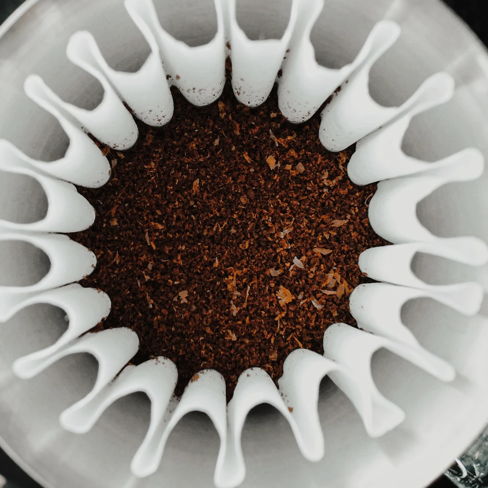
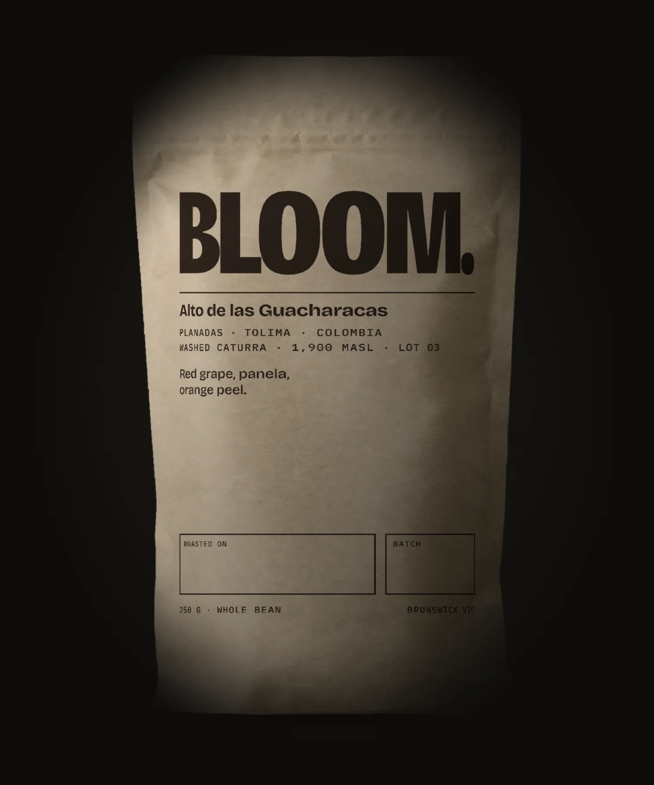
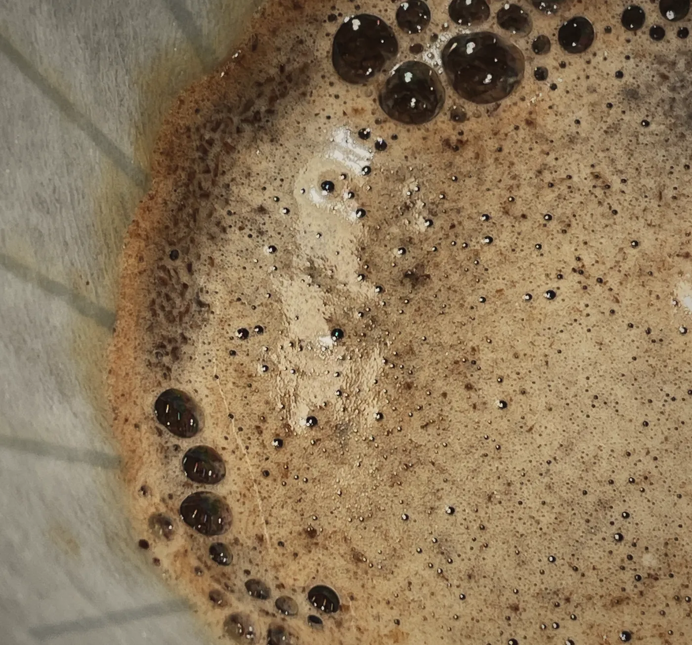
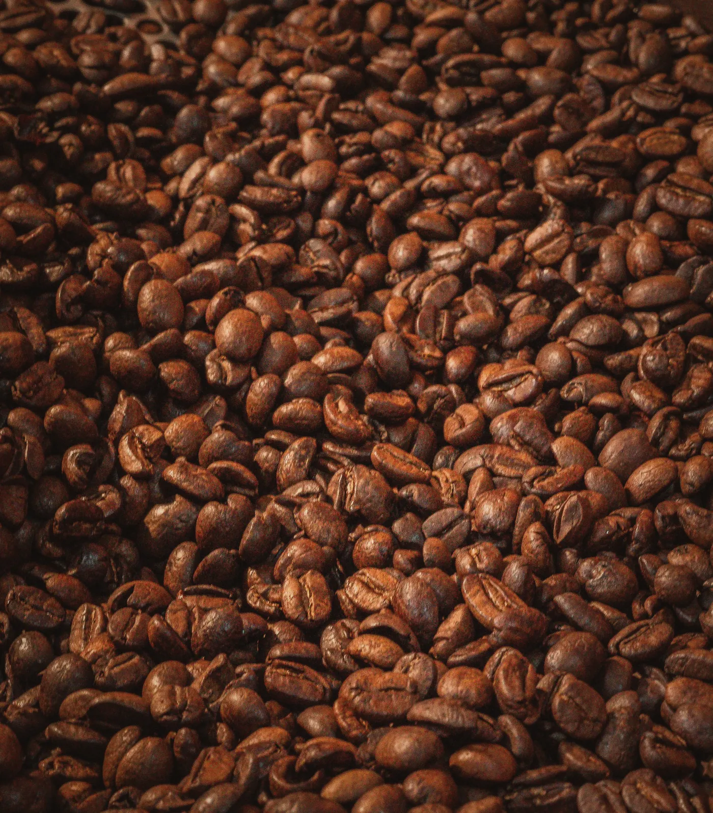
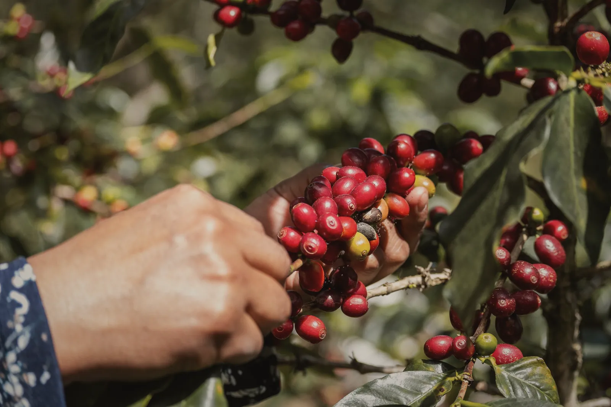

Ours
Day 3
From this week’s roast.
- Rise
- 10.4mm
- Held
- 43s
- CO₂ left
- 93%

Planadas, Tolima · Roasted in Brunswick
One coffee, roasted every Monday, and sold only while it still does this.
On the shelf today: this week’s roast, from Monday’s drum.
The bloom
Roasting leaves carbon dioxide locked inside every bean. Pour hot water on fresh grounds and the gas forces its way out: the bed swells into a dome, foams, and holds there. Baristas call it the bloom.
The gas leaves a bean at a steady, known rate, and the aromatics leave with it. So how hard a coffee blooms is the most honest date stamp it has. Below are two doses of the same coffee from the same drum. The only difference is the date on the bag.

Day 3
From this week’s roast.
Day 60
Same coffee, two months on.
Your bag’s age
Ours, day 3: rises 10.4 millimetres and holds 43 seconds. A bag from the cupboard, day 60: rises 1.2 millimetres and holds 10 seconds.
What you just watched
Every Monday we brew one dose from the new roast and one from each of the four roasts before it, and read the rise off a steel rule. The simulation above runs on those readings: 15 g of grounds, 45 g of water at 94 °C, poured in five seconds.
By day 30 there is a third of the gas left and the dome is under half the height. By day 60 the water just sits on top, because there is nothing left to push it around. It still makes a cup. It makes a flat one.
A bag that only says “best before” is usually printed a year after the roast. Look for a roast date instead, and put it into the dripper on the right.
How we measure it, every Monday

The only thing we sell
Roasted every Monday. Orders close Sunday at midnight.
Get a bag in the next roast
Where it comes from
All 3,500 kilos of Lot 03 came off one slope above Gaitania, in 50 sacks. Green coffee keeps for a year; roasted coffee keeps for a month. So we keep it green and roast 247 bags of it every Monday, which gets us through the lot in 49 Mondays.
The farm, the pick and the lot“We used to sell nine coffees. Every one of them was a week older than it should have been by the time it went out the door.”